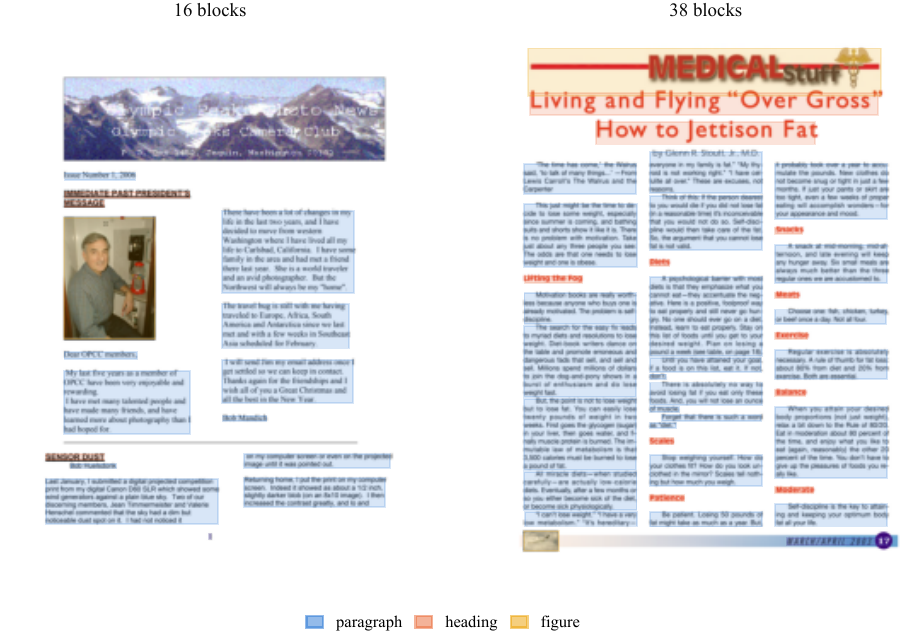

AI NEWS ISSUE 57
Claude Ship이 코드를 고치면, 누가 병합을 승인할까?
리뷰 의견을 반영해 코드를 고치고 테스트도 모두 통과했습니다. 이제 누군가 수정안을 보고 “이대로 반영해도 좋다”고 승인해 주면 됩니다. 앤트로픽이 공개한 Claude Ship은 팀이 미리 정한 조건에 맞으면 직접 승인할 수 있습니다. 꼭 사람이 봐야 하는 변경도 팀이 정합니다.
AT A GLANCE
30초 요약
- Claude Ship은 코드 리뷰에서 찾은 문제를 고칩니다. 팀이 허용한 변경은 직접 승인할 수 있고, 최종 병합은 GitHub에 설정한 규칙을 따릅니다.
- Z.ai가 만든 GLM-5.4는 신경망 중간에 있는 28개 층을 두 번 거칩니다. 같은 가중치로 첫 번째 계산 결과를 한 번 더 다듬습니다.
- LlamaIndex가 공개한 OCRia-nano-1은 GPU 없이도 PDF의 글자를 읽고 표의 행과 열을 찾아냅니다. 모델 가중치도 내려받을 수 있습니다.
- Vercel은 모델 제공자가 요청 내용을 저장하는지 외부 감사인이 직접 확인하는 절차를 발표했습니다. 첫 감사에는 세 곳이 참여합니다.
자료 확인 네 회사 모두 원문에 11월 23일로 발표일을 표기했습니다. 이 기사는 한국시간으로 11월 24일에 확인한 내용을 담았습니다.
ANTHROPIC · CLAUDE SHIP
클로드가 승인한 PR이 아직 열려 있는 이유
앤트로픽의 API 문서에는 관리자 키로 Pro와 Team 사용량까지 조회할 수 있는 것처럼 적혀 있었습니다. 고객이 이 대목에서 혼란을 겪자 제품 담당자는 Claude Tag에 문구를 고치는 작업이 이미 진행 중인지 물었습니다. Tag가 수정안을 담은 풀 리퀘스트(PR)를 열었습니다. 코드 리뷰에서 병합을 막을 문제는 나오지 않았고, 문서 담당자의 승인과 Claude Approvals 검사를 거쳐 그날 저녁 수정안이 반영됐습니다. 앤트로픽의 문서 수정 사례 ↗
이 과정에서 클로드가 맡을 수 있는 일은 세 가지입니다. 먼저 Code Review가 바뀐 줄과 주변 코드를 함께 읽고 문제가 있는 곳에 의견을 남깁니다. PR Steward는 그 의견을 반영해 코드를 고치고, 실패한 테스트나 병합 충돌도 처리합니다. 수정본을 올릴 때는 무엇을 바꿨고 어떻게 되돌릴 수 있는지 적어 둡니다. Code Review는 정식으로 제공되며, PR Steward는 베타 기능입니다. Claude Ship 한국어 문서 ↗
승인을 맡는 건 또 다른 베타 기능인 Claude Approvals입니다. 팀은 저장소의 .claude/approvals.yml에 어떤 파일을 고칠 때 몇 명의 승인이 필요한지, 언제 클로드가 직접 승인해도 되는지 적습니다. 변경을 분류하는 기준은 일상적인 문장으로 쓸 수 있고, 코드 리뷰에서 나온 지적도 승인 조건에 넣을 수 있습니다. 클로드가 승인했더라도 GitHub에서 요구하는 검사와 담당자 승인까지 마쳐야 코드를 병합할 수 있습니다. Claude Approvals 한국어 문서 ↗

정책을 처음 적용할 때는 관찰 모드로 시작할 수 있습니다. 클로드가 어떤 결정을 내렸을지만 기록하는 방식입니다. 팀은 그 기록을 사람의 판단과 비교해 본 뒤, 원하는 저장소에서 이 검사를 병합 조건에 넣을 수 있습니다.
GitHub 저장소를 쓰는 Claude Team·Enterprise 고객이 대상입니다. 관찰 모드에서도 분류와 코드 리뷰에는 사용료가 들 수 있습니다. 출시 시점에는 데이터 비보존(ZDR)이나 의료정보 보호를 위한 HIPAA 설정을 적용한 조직, 암호화 키를 직접 관리하는 조직은 이용할 수 없습니다. 이용 조건과 요금 안내 ↗
앤트로픽의 Claude Code 팀이 9월에 병합한 PR은 6월의 두 배를 넘었습니다. 같은 기간 병합 후 되돌린 PR의 비율은 40% 넘게 줄었습니다. 그동안 팀은 여러 검토 단계 중 하나로 Code Review를 썼습니다. 새 승인 기능이 사람의 리뷰 시간을 얼마나 줄여 주는지는 이 집계만으로 알기 어렵습니다. Claude Code 팀의 기록 ↗
NETFLIX · QCON 발표
넷플릭스는 코드를 쓰기 전에 팀의 설계 기준부터 공유합니다
같은 기능을 다섯 가지 방식으로 구현한 코드가 남아 있다면, 에이전트는 어느 쪽을 따라야 할까요? 넷플릭스에서 회원 가입과 요금 청구 화면을 만드는 팀은 앞으로 쓸 방식을 먼저 골랐습니다. 그리고 왜 그 방식을 택했는지 기록해 에이전트가 코드를 쓰기 전에 읽게 했습니다. 넷플릭스 엔지니어 마크 쿠잠이 11월 18일 QCon San Francisco에서 소개한 사례입니다.
- 계획을 세울 때에이전트가 팀의 설계 기록을 읽고 구현 계획을 냅니다. 이 계획도 같은 기준으로 검토합니다.
- PR이 열리면리뷰 에이전트가 바뀐 코드를 읽고 팀의 설계 기준에서 벗어난 곳을 짚습니다.
- 사람이 검토할 때개발자가 에이전트의 지적과 실제로 바뀐 코드를 함께 살펴봅니다.
- 코드를 병합한 뒤문서 담당 에이전트가 새 코드에 맞춰 설명을 고칩니다.
다음 작업을 맡은 에이전트는 이렇게 고친 문서를 읽고 시작합니다.
Z.AI · GLM-5.4
GLM-5.4는 같은 28개 층에서 두 번 계산합니다
Z.ai는 약 7,500억 개의 매개변수를 가진 GLM-5를 바탕으로 GLM-5.4를 만들었습니다. 이 모델은 신경망 중간의 28개 층을 한 번 통과한 뒤 그 결과를 같은 층에 다시 넣습니다. 첫 번째 계산에서 파악한 문맥을 두 번째 계산에서 다듬는 방식입니다. Z.ai는 이 구조를 ‘루프 트랜스포머’라고 부릅니다. 같은 가중치를 쓰므로 새 층을 쌓을 때보다 필요한 매개변수는 적습니다. 대신 같은 층을 다시 거치는 만큼 계산이 늘어납니다. Z.ai의 기술 설명 ↗
Z.ai는 이 반복이 어떤 차이를 만드는지 알아보려고 더 작은 모델 두 개를 비교했습니다. 두 모델의 매개변수는 각각 300억 개로 같았습니다. 반복 구조를 쓴 모델은 훈련에 연산을 약 10% 더 썼고, 여러 시험에서 추론 과정까지 포함한 평균 출력 길이는 10~14% 짧았습니다. 이 수치는 작은 모델끼리 비교한 결과여서 실제 GLM-5.4의 사용 비용까지 알려 주지는 않습니다.
발표 당시 GLM-5.4는 GLM Coding Plan, ZCode, Z.ai Chat에서 사용할 수 있었습니다. ZCode 안내에 따르면 한 번에 다룰 수 있는 문맥 길이는 100만 토큰입니다. Z.ai는 범용 API도 출시할 예정이며, 안전성을 보완한 뒤 가중치를 공개하겠다고 밝혔습니다. ZCode 이용 안내 ↗
LLAMAINDEX · OCRIA-NANO-1
견적서에 적힌 12,000원, 어느 상품의 가격일까요?
견적서에서 숫자를 정확히 읽어도 그 가격을 옆줄 상품에 붙이면 견적이 틀어집니다. LlamaIndex의 OCRia-nano-1은 글자와 그 글자가 놓인 자리를 함께 살핍니다. 먼저 문서 처리 도구 LiteParse가 PDF에 들어 있는 텍스트를 읽습니다. 스캔 이미지처럼 텍스트를 꺼낼 수 없는 부분에만 문자 인식을 적용합니다. 그런 다음 글자의 위치와 간격을 보고 제목과 문단을 구분하고 표의 행과 열을 복원합니다. 결과는 Markdown 문서나 글자의 좌표를 담은 JSON으로 받을 수 있습니다. LlamaIndex의 제품 발표 ↗


이 도구에 쓰이는 모델은 일곱 개로, 매개변수를 모두 합쳐 약 810만 개입니다. LlamaIndex가 ParseBench 문서로 측정했을 때 CPU 코어 하나로 한 페이지를 처리하는 데 평균 426밀리초가 걸렸습니다. 코어 16개에 작업을 하나씩 나눠 동시에 처리하자 초당 27.8페이지를 읽었습니다. 문서 처리 평가인 ParseBench-2에서는 종합 59.2점을 받았습니다. 다만 그래프는 이미지로 남기기 때문에 그 안의 수치를 표로 옮기려면 별도로 읽어야 합니다. 기술 보고서의 측정 조건과 결과 ↗
LiteParse 코드는 Apache 2.0 라이선스로 공개됐습니다. 함께 쓰는 모델 가중치에는 수정된 Open RAIL-M 라이선스가 적용됩니다. 회사 제품에 넣으려면 매출과 투자 규모에 따라 어떤 이용 조건이 적용되는지 모델 카드에서 확인해야 합니다. 모델 가중치 이용 조건 ↗
VERCEL · AI GATEWAY
모델이 답을 보내고 나면 요청 내용은 어디에 남을까요?
모델 제공자가 고객의 질문을 학습에 쓰지 않더라도, 오류를 조사하려고 로그에 남겨 둘 수는 있습니다. Vercel이 발표한 Audited ZDR은 AI Gateway로 주고받은 요청과 응답을 제공자가 저장하는지 외부 감사인이 확인하는 절차입니다. 감사인은 추적할 수 있는 표시를 넣어 요청을 보낸 뒤 코드와 서버 설정을 살핍니다. 캐시, 백업, 고객 지원 도구에 사본이 남는지, 장애가 났을 때 요청이 데이터를 보관하는 다른 경로로 넘어가는지도 확인합니다. Vercel의 감사 절차 ↗

첫 감사에 참여한 곳은 Baseten, Modal, Wafer입니다. 세 곳 모두 감사를 시작했고, Vercel은 첫 보고서가 12월 8일까지 공개될 것으로 내다봤습니다. Vercel의 설명에 따르면 이 등급을 선택한 팀의 요청은 감사 기준을 충족한 제공자에게만 전달됩니다. 장애로 다른 제공자가 대신 요청을 받을 때도 마찬가지입니다.
다음 감사까지 기다리지 않고 이상 징후를 알아보는 방법도 있습니다. Vercel은 점검용 요청마다 고유한 비공개 URL을 넣어 보냅니다. 누군가 그 주소에 접속하면 어떤 모델과 제공자를 거친 요청인지 찾아 조사합니다. 접속 흔적이 없어도 열어 보지 않은 사본은 남아 있을 수 있습니다. 코드와 저장 경로를 직접 검사하는 이유입니다. Vercel의 카나리 점검 방식 ↗
OUR VIEW · 헬로우 휴먼의 관점
“환불액을 바꾸면 정산 담당자도 봐야 해요”
환불액을 계산하는 코드를 고칠 때마다 선임 개발자가 이런 댓글을 남긴다고 해 봅시다. 그날은 담당자가 확인하고 넘어갑니다. 그런데 다음번에 다른 사람이 같은 코드를 고치면, 누군가 또 정산 담당자를 불러야 합니다.
반올림 방식을 바꾸면 정산 내역이 어떻게 달라지는지 예제 하나를 남겨 두면 어떨까요? 저장소에는 이 코드를 바꿀 때 누가 승인해야 하는지도 함께 적어 둡니다. 그러면 넷플릭스 사례처럼 코드를 쓰는 에이전트가 미리 이유를 읽을 수 있고, Claude Ship은 리뷰 때 그 승인 기준을 적용할 수 있습니다. 우리가 줄여 보고 싶은 건 같은 판단을 매번 처음부터 설명하는 수고입니다.
OUR LAB · 모임의 실험 제안
똑같이 한 줄을 고쳤는데, 어느 쪽을 사람이 봐야 할까요?
가상 쇼핑몰에서 한 개발자가 반품 안내의 오탈자를 고쳤습니다. 다른 개발자는 환불액을 반올림하는 코드를 한 줄 바꿨습니다. 두 건 모두 테스트를 통과하고 모델도 위험이 낮다고 판단하더라도, 두 번째 PR은 정산 담당자가 봐야 합니다. 모델이 이 차이를 놓쳤을 때 팀의 승인 규칙이 걸러 낼 수 있을지 시험해 보자는 제안입니다.
- 모델의 의견모델이 무엇을 왜 바꿨는지 읽고, 어떤 업무에 영향이 갈지 근거와 함께 적습니다.
- 팀의 규칙검사 프로그램이 바뀐 파일의 경로와 테스트 결과를 보고 담당자 승인이 필요한지 확인합니다.
- 결과 비교예상한 결과와 실제 판단을 나란히 기록합니다. 이 실험에서는 PR을 승인하거나 병합하지 않습니다.
- 안내문 오탈자를 고치고 검사를 통과하면
- 승인 후보로 기록
- 환불액 반올림 코드를 바꾸고 검사를 통과하면
- 정산 담당자에게 검토 요청
- 안내문을 고쳤는데 링크 검사가 실패하면
- 수정한 뒤 다시 검사
- 검사 결과가 없거나 모델이 답하지 않으면
- 판단을 보류하고 사람에게 검토 요청
비교에는 가상 PR 30건을 씁니다. 문서·주석, 화면 표시, 일반 기능, 상품·쿠폰 규칙, 주문·결제·정산, 권한·DB 구조에서 다섯 건씩 고릅니다. 담당자가 각 변경의 위험도와 승인 조건를 미리 적어 두되, 이 답안은 모델에 보여 주지 않습니다. 규칙을 다듬을 때 쓴 예제도 평가에서 뺍니다.
같은 30건을 두 가지 방식으로 검토합니다. 한쪽은 사람이 직접 읽고, 다른 쪽은 모델의 의견과 규칙 검사 결과를 보고 판단합니다. 이미 본 답이 판단에 영향을 주지 않도록, 같은 PR은 두 방식에서 서로 다른 사람이 맡습니다.
목표는 두 가지입니다. 먼저 고위험 변경을 승인 후보로 잘못 분류한 건수가 0건이어야 합니다. 한 건이라도 나오면 해당 PR과 그때 쓴 규칙을 보관해 원인을 살핍니다. 또 사람이 직접 검토할 때만큼 문제를 잘 찾아내면서 사람이 리뷰에 쓴 총시간을 30% 이상 줄일 수 있는지 봅니다. 위험을 지나치게 높게 잡아 사람이 다시 살핀 건수와 재시도 비용도 기록해 두면, 규칙을 고친 뒤 같은 30건으로 다시 비교할 수 있습니다.
SOURCES
읽은 자료
- Anthropic의 Claude Ship 발표 ↗ · Claude Ship 한국어 문서 ↗ · Claude Approvals 한국어 문서 ↗
- 넷플릭스 엔지니어의 QCon 발표 소개 ↗ 11월 18일 발표에서 소개한 커머스 UI 팀의 설계 기록과 리뷰 방식
- Z.ai의 GLM-5.4 기술 발표 ↗ · ZCode 이용 안내 ↗ 28개 층을 반복해 쓰는 구조와 비교 실험, 모델을 이용할 수 있는 경로
- LlamaIndex의 OCRia-nano-1 발표 ↗ · LlamaIndex 기술 보고서 (PDF) ↗ · OCRia-nano-1 모델 카드 ↗
- Vercel의 Audited ZDR 발표 ↗ 감사 대상과 장애 때 요청을 보낼 수 있는 경로, 보고서 공개 일정